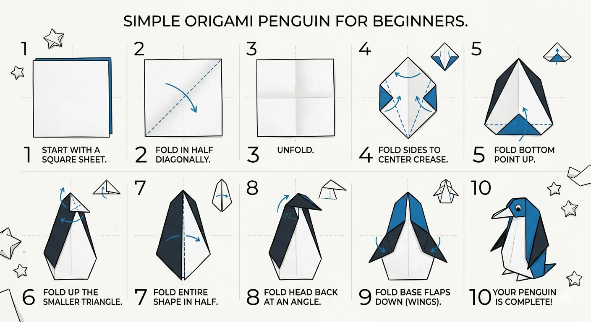

Simple Origami Penguin for Beginners
Follow the diagram and written steps below to fold your very own origami penguin. All you need is one square sheet of paper — no scissors, no glue!
🧻 Supplies You'll Need
Any square origami paper works, but crisp, properly-weighted paper makes this fold much easier. We recommend a basic multi-color pack for beginners.
See Recommended Paper
Follow steps 1–10 in order using the diagram and the written instructions below.
New to folding?
Read our full Beginner's Guide first — it covers paper choice, folding terms, and the symbols used in diagrams like this one.
Read the GuideWritten Step-by-Step Instructions
Step 1: Start with a Square Sheet
Use a square piece of origami paper. If your paper is two-toned, start with the darker colour facing down — this will become the penguin's back.
Step 2: Fold in Half Diagonally
Bring one corner up to meet the opposite corner, forming a triangle. Crease firmly along the fold, then unfold back to a flat square.
Step 3: Unfold
Open the paper back out flat. You now have a diagonal crease running corner to corner.
Step 4: Fold Both Sides to the Centre Crease
Fold the left and right corners inward so their edges meet along the diagonal crease in the centre. You should now have a kite shape.
Step 5: Fold the Bottom Point Up
Take the bottom pointed tip and fold it upward so it meets roughly the centre of the shape. This creates the penguin's white belly area.
Step 6: Fold Up the Smaller Triangle
Fold the small triangle at the top downward slightly — this will become the penguin's head. Leave a small white strip showing at the top for the face.
Step 7: Fold the Entire Shape in Half
Fold the whole shape in half vertically (mountain fold), bringing the right side behind the left. The penguin's body shape should now be visible from the side.
Step 8: Fold the Head Back at an Angle
Rotate the top portion (the head) forward at a slight angle using an inside reverse fold. This gives the penguin its characteristic tilted head and creates the beak.
Step 9: Fold the Base Flaps Down (Wings)
On each side, fold the bottom corner flaps downward and outward to form the penguin's flippers/wings. Crease well so they hold their shape.
Step 10: Your Penguin is Complete!
Stand your penguin upright. Give it a gentle squeeze at the base to help it balance. Add a dot with a pen for the eye and your origami penguin is done!
What to Fold Next
Mastered the penguin? Try the classic origami crane for your next challenge, or fold a quick origami heart to use as a gift tag. You can browse every guide on our tutorials page.